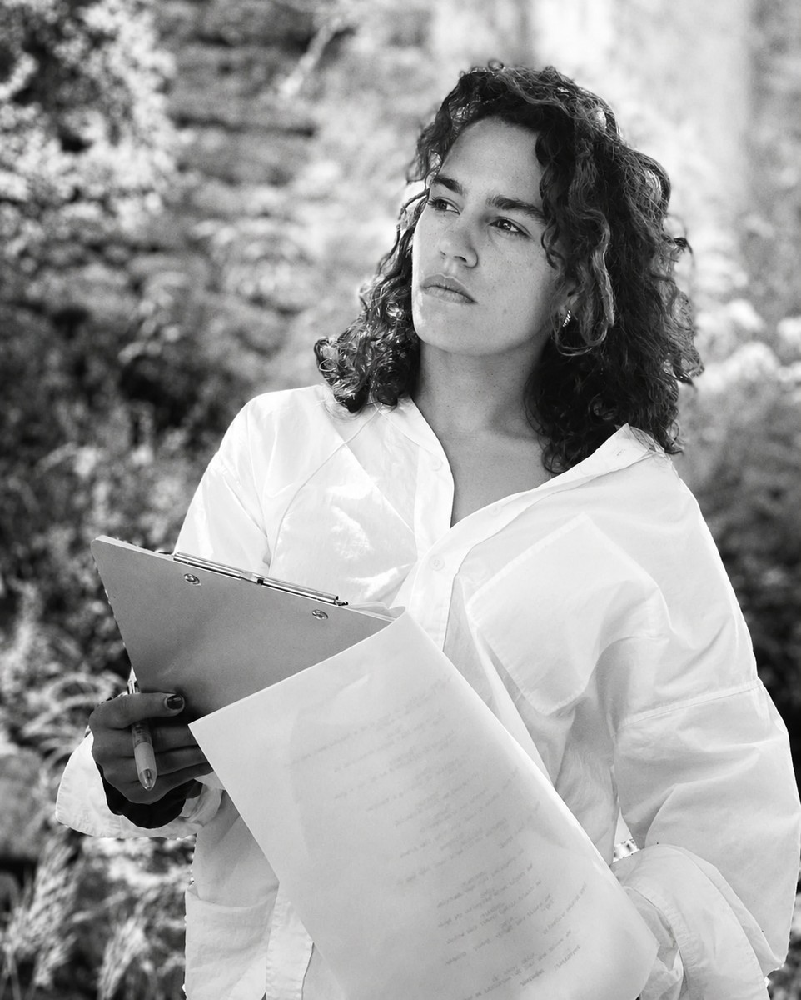
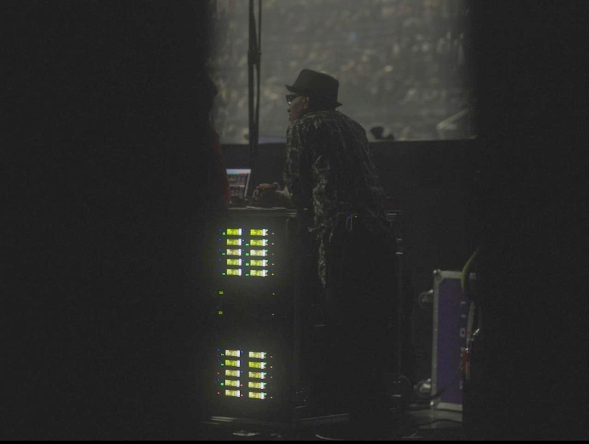
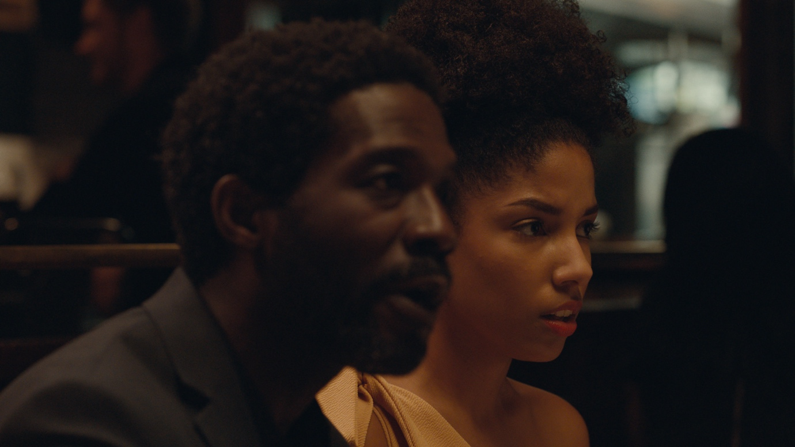
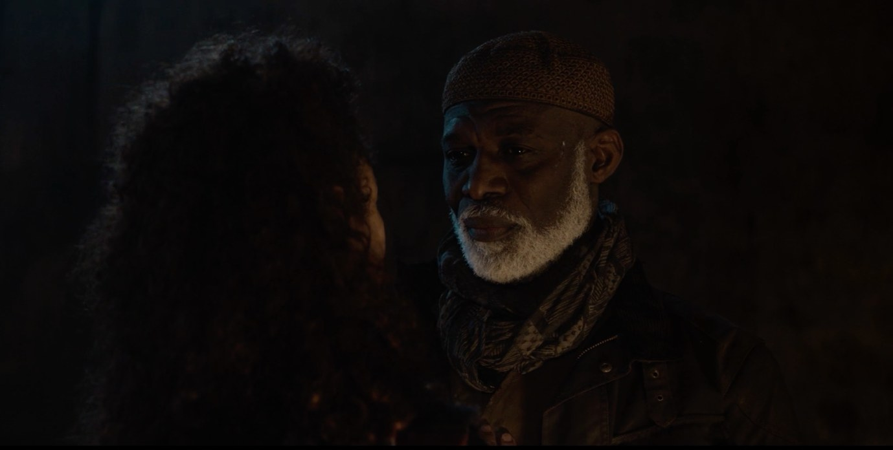
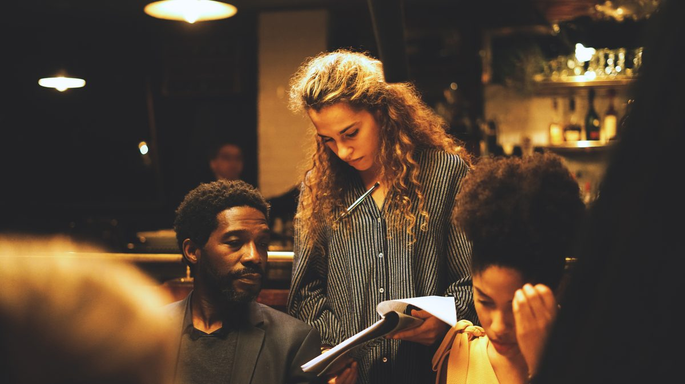
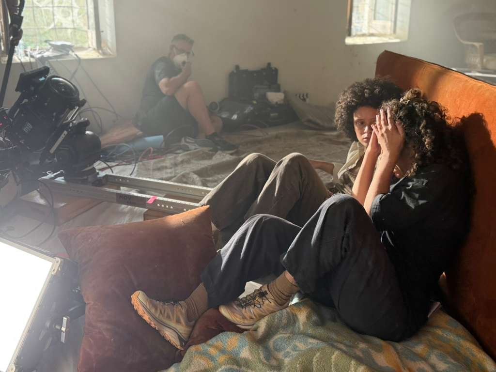
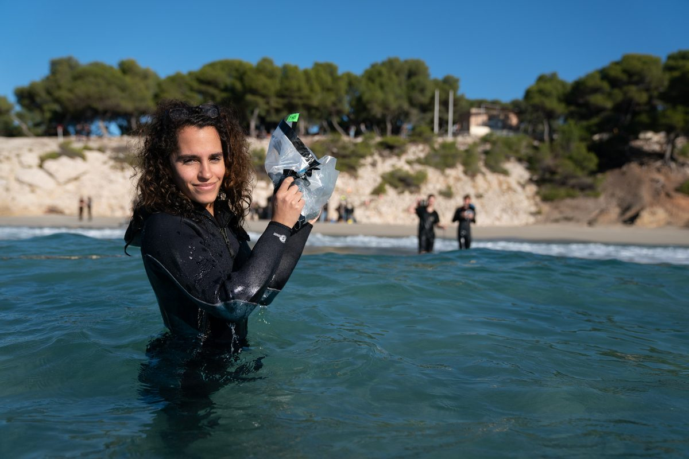
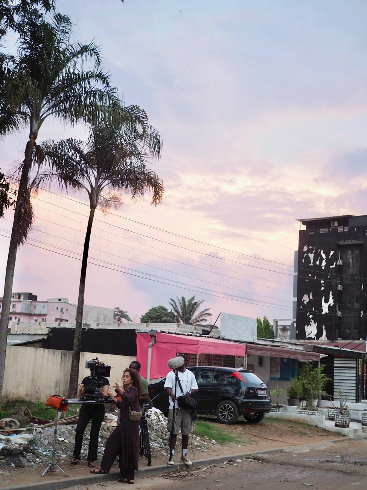
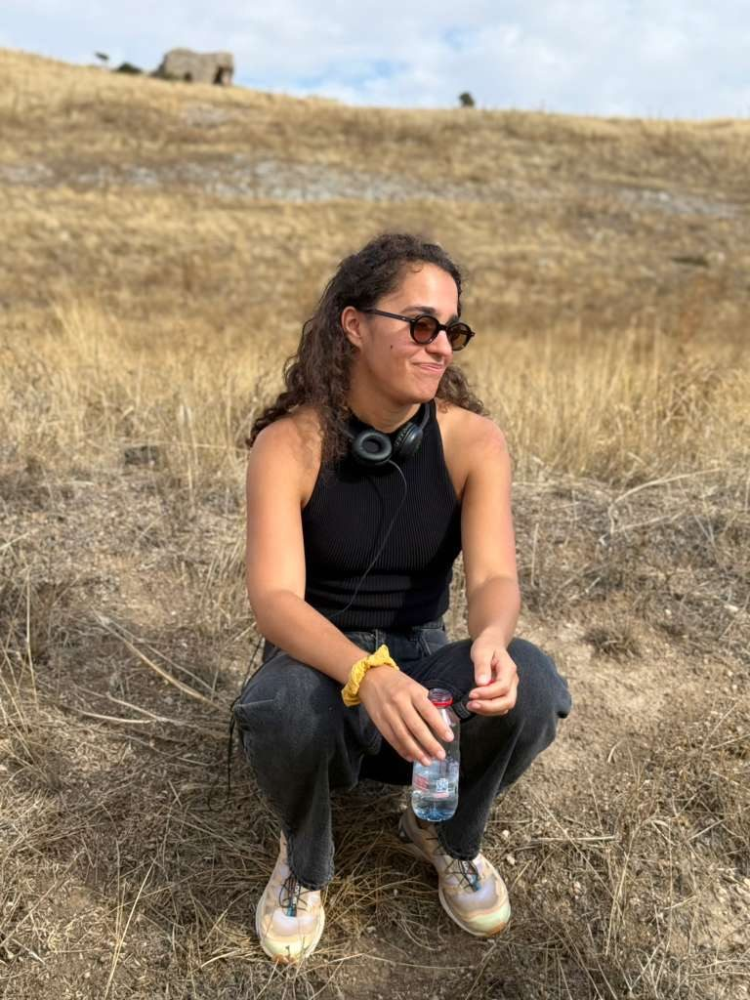

Autrice - réalisatrice

Projets — En cours

Projets — Réalisés






À propos

Je suis une réalisatrice française bilingue basée entre Paris et Montréal, actuellement en post-production de mon premier long métrage documentaire, Uninvited, qui explore les liens de filiation entre un père et sa fille et la transmission des origines. Financé par le programme Talents en vue de Téléfilm Canada, le film a été développé au Talent Lab du RIDM à Montréal (2020) et au Hot Docs Accelerator de Toronto (2022).
Je développe également Ma bien-aimée, un nouveau court métrage de fiction sur les arnaques sentimentales.
En 2021, je réalise et autoproduis mon premier court métrage, La mise à mort de mon père, présenté dans plusieurs festivals, notamment en Amérique du Nord. Je réalise ensuite des scènes de jeu de deuxième équipe pour la saison 2 de la série The Walking Dead: Daryl Dixon, puis un court-métrage de type proof of concept pour The Sphere, à Los Angeles.
Je fais mes débuts dans le milieu du cinéma en tant que scripte, un métier qui m'offre une position d'observation privilégiée au cœur de la narration et de la mise en scène. Je travaille aux côtés de nombreux réalisateurs sur des longs métrages dont Valerian et la Cité des mille planètes, des séries telles que Lost in Space, A Million Little Things et Riverdale, ainsi que des campagnes publicitaires pour Dior, Nintendo Switch et Airbnb.
Contact